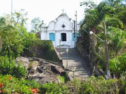
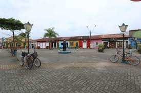

ITANHAÉM
História de Itanhaém
Fundada em 22 de abril de 1532 por Martim Afonso de Sousa, Itanhaém é a segunda cidade mais antiga do Brasil. Localizada no litoral sul de São Paulo, a "pedra que canta" (origem tupi) foi vital na colonização, destacando-se pelo conjunto histórico do século XVII, o Convento Nossa Senhora da Conceição e a Igreja Matriz.
Curiosidades
Itanhaém, no litoral sul de SP, é a segunda cidade mais antiga do Brasil, fundada em 22 de abril de 1532 por Martim Afonso de Sousa. Conhecida como "Terra de Anchieta" e "Pedra que Canta" (do tupi), destaca-se por seu centro histórico colonial, praias famosas por novelas, como a dos Pescadores, e a preservação da Mata Atlântica.
Pontos Turísticos
Principais pontos
- Centro Histórico: Inclui a Igreja Matriz de Sant'Anna (1645), o Convento Nossa Senhora da Conceição e o Museu Conceição de Itanhaém.
- Cama e Passarela de Anchieta: Passarela de 220 metros que leva ao local onde o Padre José de Anchieta descansava, oferecendo uma vista incrível.
- Monumento a José de Anchieta: Escultura em homenagem ao apóstolo do Brasil no Centro Histórico.
- Praia dos Pescadores: Famosa por ter sido cenário da novela "Mulheres de Areia" e com um monumento icônico.
- Praia dos Sonhos: Conhecida por sua beleza, com ilhas e costões rochosos.
- Gruta Nossa Senhora de Lourdes: Local de fé e beleza, situado entre a Praia dos Sonhos e a Praia do Cibratel.
- Boca da Barra: Encontro do Rio Itanhaém com o mar, ideal para esportes náuticos como caiaque e stand up paddle.
- Morro do Paranambuco: Oferece uma das vistas mais panorâmicas da cidade, incluindo a Ilha das Cabras.


